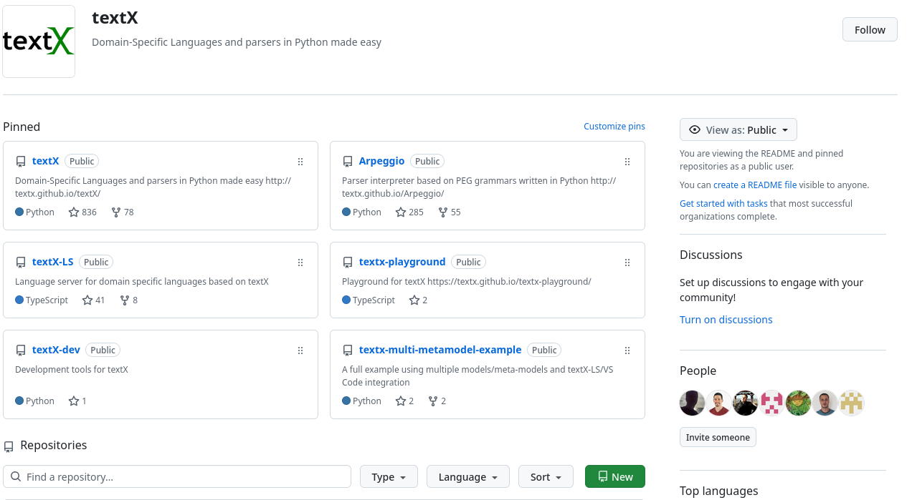
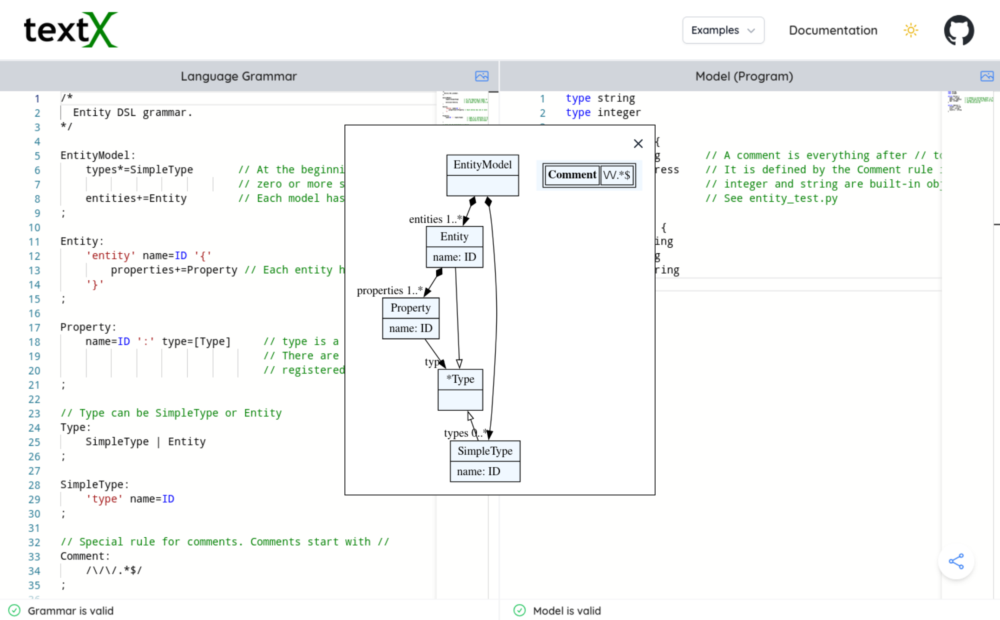
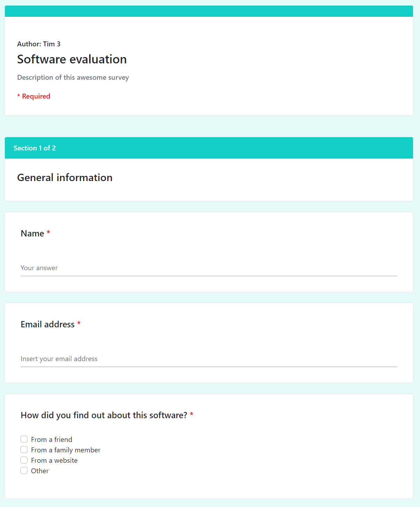
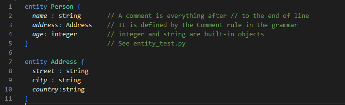
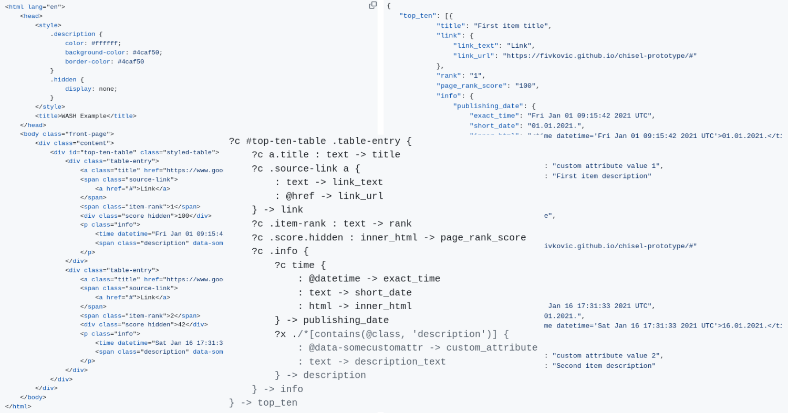

Teaching Domain-Specific Languages with textX: A Hands-On Approach
Igor Dejanović, Milan Šović and Balša Šarenac
Faculty of Technical Sciences, University of Novi Sad
30th international scientific and professional
Conference INFORMATION TECHNOLOGY 2026
24.-28. February 2026
1. Domain-Specific Languages
- Specialized languages designed for domain experts
- Domain concepts
- Boost in productivity – 10x and more
- Today popular rebranding: Low Code / No Code
- DSLs are powerful, but teaching them is challenging.

2. The Pedagogical Challenge
- Traditional compiler courses use complex formalisms.
- Modern Language Workbenches (e.g. MPS) have steep learning curves.
- Students spend too much time fighting the IDE/Tooling and not enough time learning parsing, ASTs, and semantics.
- We need a way to give hands-on design experience without the “heavyweight” overhead.
3. The Solution: textX
- A lightweight, open-source Python library for rapid DSL development.
- Project started in 2014.
- Goal: low friction experience in building DSLs.
- Open-source - MIT License
- 836 stars, 78 forks and 24 contributors on GitHub as of this writing.
- Used by >600 projects on GitHub.
- Used in academia and industry for teaching and developing DSLs, data extraction, IDE language support, legacy code analysis etc.

4. Course in DSLs
- A master level course at the Faculty of Technical Sciences, University of Novi Sad.
- One semester.
- Taught since 2014. ~20 students per generation on average.
5. Course Methodology
- Phase 1: Foundations: Theory (Parsing, Concrete vs. Abstract syntax) + Labs using the Online Playground and VS Code extension.
- Phase 2: Capstone Project (Team-based, 3-5 team members):
- Ideation: Students pick their own domain (high engagement).
- Analysis & Design: Analyze domain, identify concepts, write grammar, visualize metamodel.
- Implementation: Build Interpreter or Code Generator.
- Demo: Peer review. Group discussions.
6. Online Playground

7. Student Projects (Selection)
7.1. SurveyIT
Generates Web Surveys
import "example_question_types.qstn"
survey SoftwareEvaluation {
title : "Software evaluation"
description: "Description of this awesome survey"
author: "Tim 3"
submit_url:"https://exampleURL.com"
success_message: "You have successfully submitted your answers! Thank you for participating."
error_message: "Unfortunately, an error occured. Please try again."
section {
title: "General information"
@Required
@TextQuestion
question Question0 {
title: "Name"
multiline: false
}
@Required
@EmailQuestion
question Question1 {
title: "Email address"
placeholder: "Insert your email address"
}

7.2. EasyColorLang
#main:
begin: "entity" names: "keyword"
end: "{" names: "keyword.other"
(match: "[a-zA-Z][a-zA-Z_0-9]*" name: "support.class")
begin: "[a-zA-Z][a-zA-Z_0-9]*" names: "markup.italic"
end: "[a-zA-Z][a-zA-Z_0-9]*" names: "entity.name.function"
(match:"\s*:\s*" name:"keyword.other")
matches_from_grammar: "entity.tx"
start entity(main)

7.3. WASH (Web Automation/Scraping)

7.4. PyTabs (Music notation player)

8. Outcomes & Conclusion
Key Observations:
- High Engagement: Students “own” their domains.
- Full Workflow: They master the pipeline from Grammar \(\to\) AST \(\to\) Semantics.
- Simplicity Wins: Using a library (textX) rather than a heavyweight IDE allows:
- focus on concepts,
- easy integration in student’s existing workflow,
- integration with the Python ecosystem.
- Virtuous Cycle: The Online Playground and VS Code Extension started as student projects.
textX eliminates the “tooling tax”, allowing students to spend most of their time learning DSL concepts and designing the language.
9. Future Work
- Expanding support tools.
- New tools - visualizers, animations, debuggers.
- Performing more rigorous evaluations.
Thanks!
Q&A
All resources presented here are free and open-source:
- textX project and documentation
- textX playground
- DSL course materials (in Serbian language)